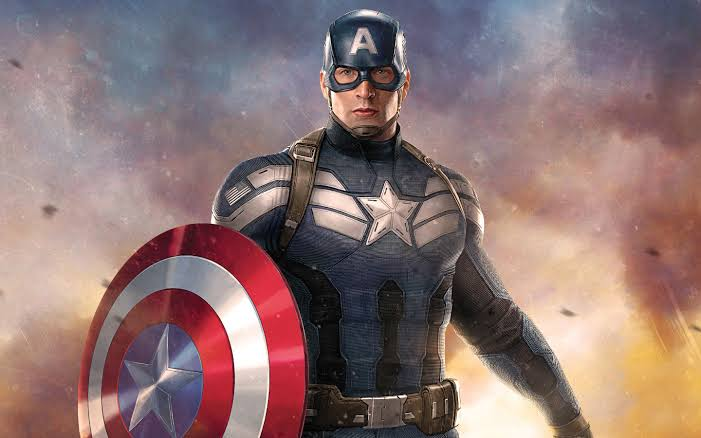

Captain America is a superhero created by Joe Simon and Jack Kirby who appears in American comic books published by Marvel Comics.
The character first appeared in Captain America Comics #1, published on December 20, 1940, by Timely Publications, a corporate predecessor to Marvel.
Captain America's civilian identity is Steven "Steve" Rogers, a frail man rejected by the United States Army for physical unfitness who is enhanced to the peak of human physical perfection by an experimental "super-soldier serum".
Equipped with an American flag–inspired costume and a virtually indestructible shield, Captain America and his sidekick Bucky Barnes clashed frequently with the villainous Red Skull and other agents of the Axis powers amid World War II.
In the war's final days, an accident left Captain America frozen in a state of suspended animation until he was revived in modern times.
He resumes his exploits as a costumed hero and becomes a leader of the superhero team the Avengers, while frequently struggling as a "man out of time" to adjust to the new era.
The character quickly emerged as Timely's most popular and commercially successful creation of the Golden Age of Comic Books, though the popularity of superheroes declined in the post-war period and Captain America Comics was discontinued in 1950.
The character saw a short-lived revival in 1953 before returning to comics in 1964 and has since remained in continuous publication.
Captain America's creation as an explicitly anti-Nazi figure was a deliberately political undertaking, inspired by Simon and Kirby's strong opposition to Nazi Germany and its supporters in the United States.
Political messages have subsequently remained a defining feature of Captain America stories, with writers regularly using the character to comment on the state of American society and government.